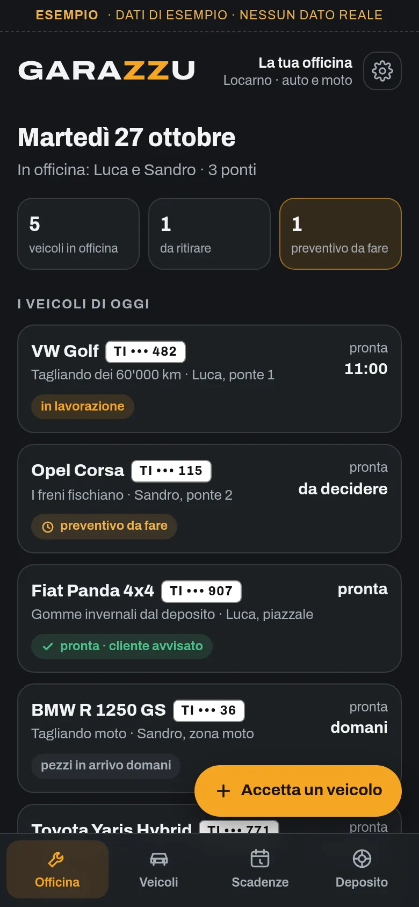
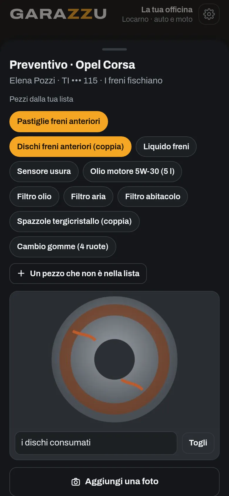
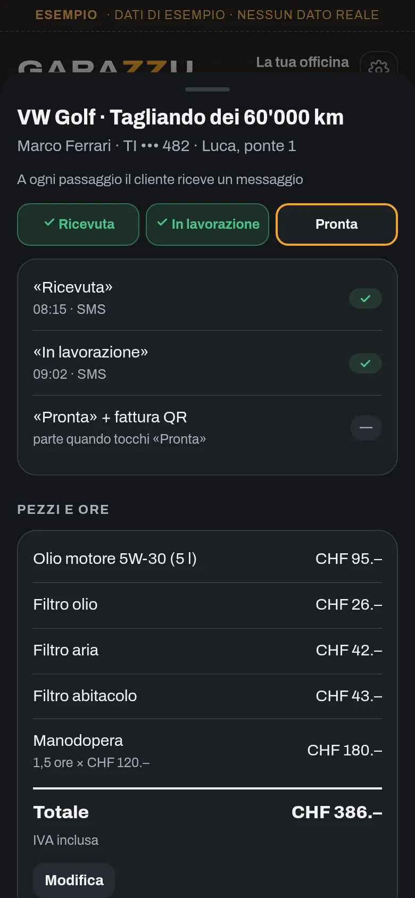
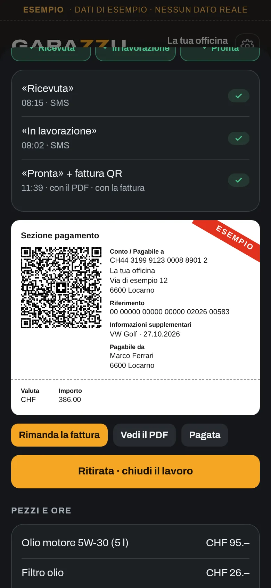

Per garage, officine e concessionari con officina
Il gestionale per l'officina
I veicoli in officina, il preventivo dal telefono con la foto, un messaggio al cliente a ogni passaggio e la fattura QR, con la storia di ogni veicolo, le scadenze e il deposito gomme. Da USD 3.99 al mese.
Si usa dal browser e si installa con un'icona, senza App Store.

Guardalo in azione
Meno di due minuti in officina, dai veicoli del mattino al deposito gomme.
Demo con dati inventati. Nel video si vedono anche cose che arriveranno presto: il preventivo approvato dal cliente con un tocco, gli avvisi che partono da soli, l'orario del cambio gomme scelto con un tocco e l'officina su tutti i telefoni.
Che cosa fa
Tutto quello che oggi sta sulla lavagna dell'officina, nei fogli dei preventivi e nella memoria del meccanico, in un posto solo.
In officina oggi
Ogni mattina vedi i veicoli in officina: che cosa c'è da fare, chi ci lavora, su quale ponte e quando saranno pronti. E le fatture ancora da incassare.
Il preventivo dal ponte
Lo fai dal telefono, con l'auto ancora sul ponte: i pezzi dalla tua lista, le ore e la foto dei dischi consumati. Il cliente lo riceve in PDF, con il messaggio nella sua lingua, e per approvarlo risponde «sì».
Presto: il preventivo approvato con un toccoUn avviso a ogni passaggio
Ricevuta, in lavorazione, pronta: a ogni passaggio il messaggio è già scritto nella lingua del cliente e parte dal telefono dell'officina, su WhatsApp, per SMS o per e-mail. Il telefono in officina suona meno.
Presto: gli avvisi che partono da soliPronta, con la fattura QR
Quando l'auto è pronta, il messaggio porta la fattura con la sezione di pagamento QR svizzera: il cliente può pagarla con l'app della sua banca prima ancora di passare.
La storia del veicolo
Tagliandi, chilometri, gomme, collaudi e preventivi di ogni veicolo, in un posto solo, anche se cambia il meccanico.
Presto: l'officina su tutti i telefoniScadenze e deposito gomme
Garazzu tiene d'occhio tagliandi, collaudi e cambi gomme e ti dice chi chiamare questo mese. Per il cambio gomme mandi a ognuno tre orari liberi solo suoi; nel deposito sai dove sono le gomme di ognuno, la misura e quanto battistrada resta.
Presto: l'orario scelto con un tocco


Schermate con dati di esempio.
Si installa senza App Store
Garazzu è un'app web: si apre dal browser e resta sul telefono con la sua icona, come le altre.
Apri garazzu.web.app con Safari, tocca Condividi e poi «Aggiungi alla schermata Home».
Apri garazzu.web.app con Chrome, tocca il menu ⋮ e poi «Installa app».
Con Chrome o Edge si installa dall'icona nella barra degli indirizzi. Funziona anche solo nel browser.
Prezzo
Un prezzo, tutta l'app
USD 3.99
al mese
USD 14.99
ogni 6 mesi
USD 24.99
all'anno
USD 74.99
una volta sola
Prezzi in dollari USA. Per ora Garazzu si acquista scrivendo a info@utoapps.ch: ti mandiamo il codice appena ricevuto il pagamento. Presto, con il pagamento online, i piani che si rinnovano avranno un mese di prova gratis, la prima volta che ti abboni (serve una carta).
Si apre con il tuo codice
Lo ricevi quando acquisti l'app. Officina, preventivi, fatture QR, veicoli, scadenze e deposito, senza limiti. I dati restano nel telefono.
Installala sulla schermata Home e scarica una copia ogni tanto (Impostazioni): in Safari, senza installarla, i dati si possono perdere.
Te la installiamo noi
La installiamo sul tuo telefono con i dati della tua officina, la tua lista dei pezzi, la tua tariffa, l'IBAN e l'IVA per la fattura QR e, se vuoi, i tuoi clienti con i loro veicoli, e ti mostriamo come si usa. Il codice a vita è compreso.
CHF 290
una volta sola
La vuoi con il tuo logo?
Garazzu esiste in versione standard, così com'è, oppure su misura, con il tuo logo, i tuoi colori e le modifiche che ti servono. Per la versione su misura scrivi a info@utoapps.ch.